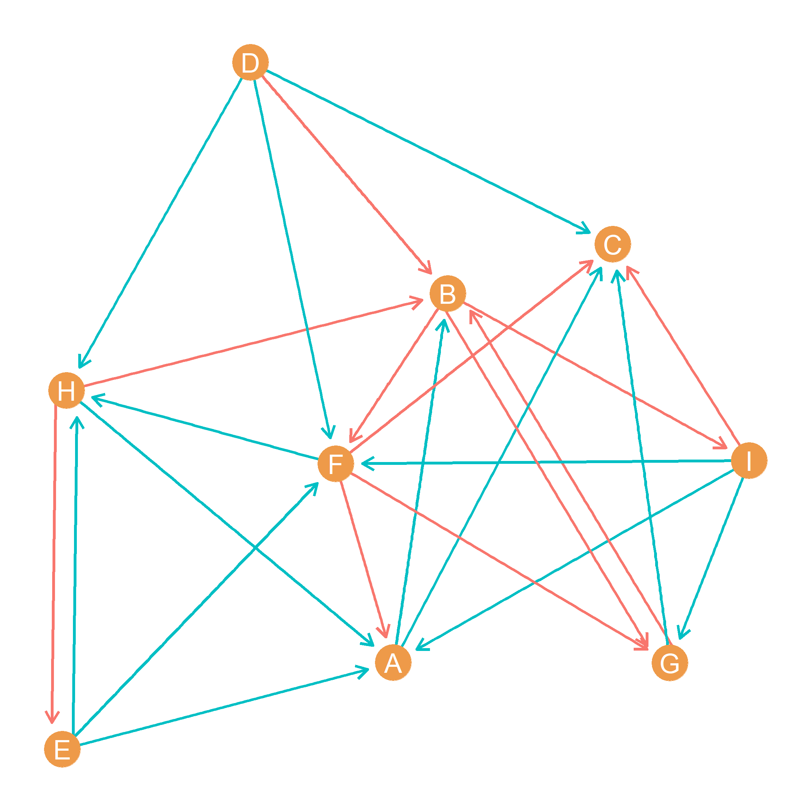
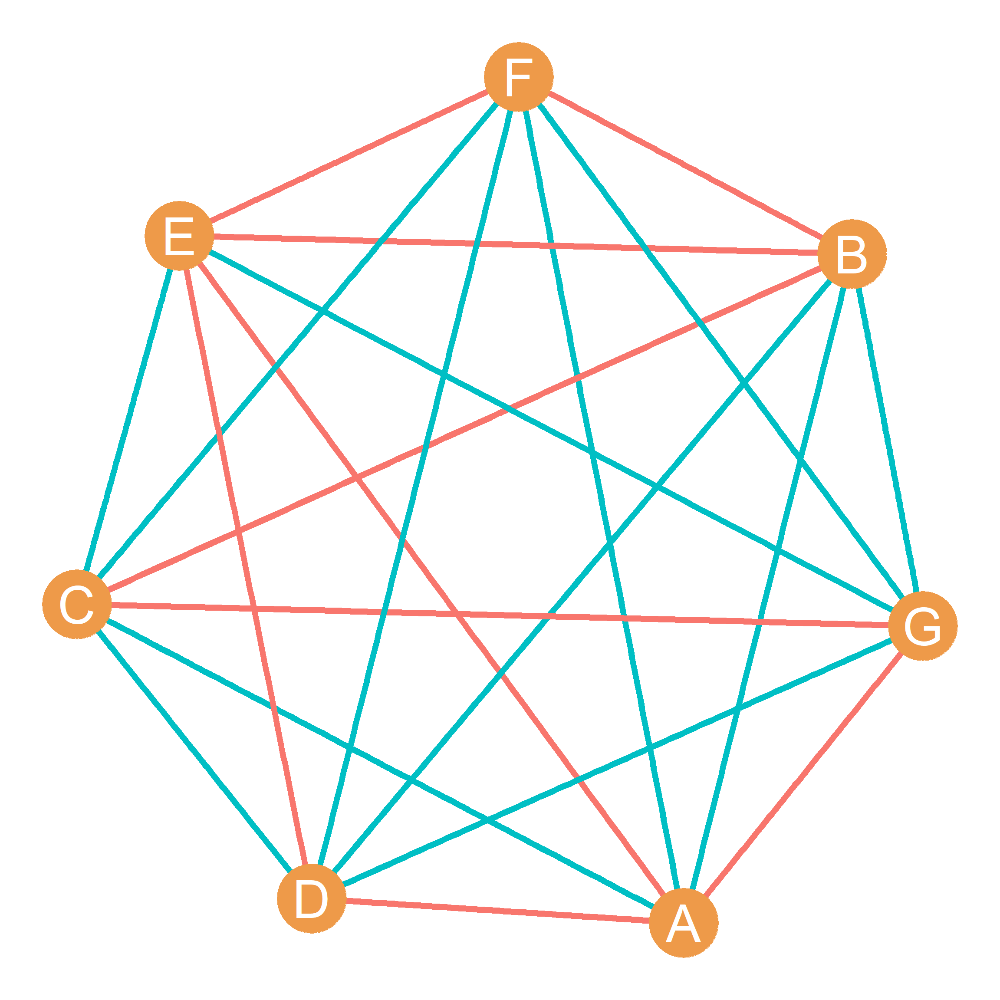
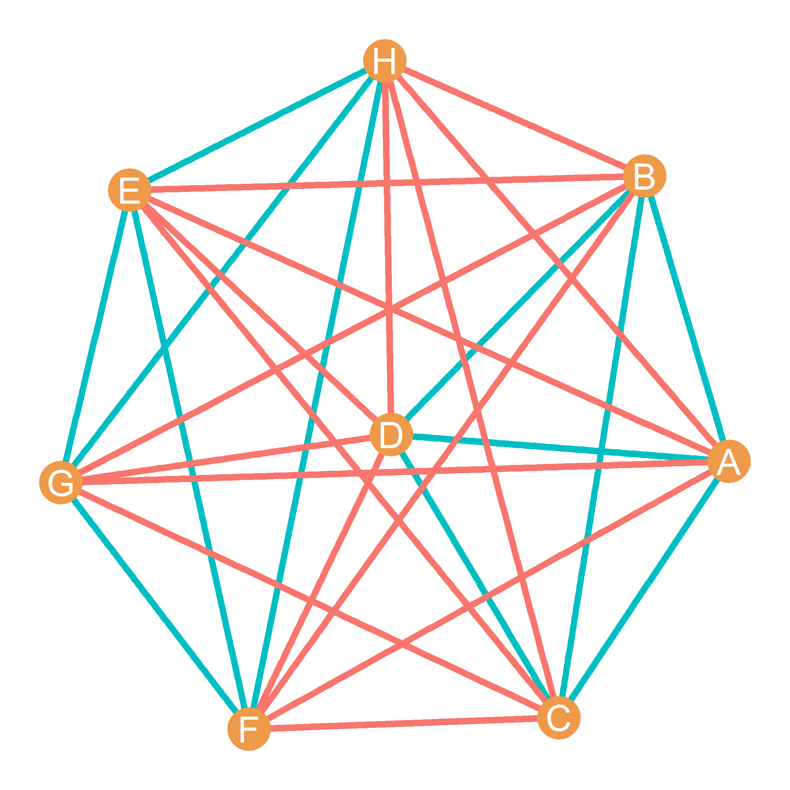

54 Homework VIII: Balance and Signed Graphs
54.1 Signed Graphs
Figure 54.1 is a directed signed graph. In the figure teal edges represent positive ties between the two nodes and red edges represent negative ties.
- Write the directed signed graph’s positive edge set.
| EA, | HA, | IA, | AB, | AC, | DC, | GC, | DF, | EF, | IF, | IG, | DH, | EH, | FH, |
- Write the directed signed graph’s negative edge set.
| FA, | BI, | DB, | GB, | HB, | FC, | IC, | HE, | BF, | BG, | FG, |
- In the matrix below, write down the cell entries for the adjacency matrix corresponding to the graph shown in Figure 54.1:
| A | B | C | D | E | F | G | H | I | |
|---|---|---|---|---|---|---|---|---|---|
| A | ---- | 1 | 1 | 0 | 0 | 0 | 0 | 0 | 0 |
| B | 0 | ---- | 0 | 0 | 0 | -1 | -1 | 0 | -1 |
| C | 0 | 0 | ---- | 0 | 0 | 0 | 0 | 0 | 0 |
| D | 0 | -1 | 1 | ---- | 0 | 1 | 0 | 1 | 0 |
| E | 1 | 0 | 0 | 0 | ---- | 1 | 0 | 1 | 0 |
| F | -1 | 0 | -1 | 0 | 0 | ---- | -1 | 1 | 0 |
| G | 0 | -1 | 1 | 0 | 0 | 0 | ---- | 0 | 0 |
| H | 1 | -1 | 0 | 0 | -1 | 0 | 0 | ---- | 0 |
| I | 1 | 0 | -1 | 0 | 0 | 1 | 1 | 0 | ---- |
54.2 Balanced and Unbalanced Triads

Figure 55.1 is a complete signed graph. In the figure teal edges represent positive ties between the two nodes and red edges represent negative ties.
- Write down all the balanced triads in the graph (you refer to a triad by listing all three nodes in it, like ABC):
| V1 | V2 | V3 |
|---|---|---|
| A | B | E |
| A | C | G |
| A | C | F |
| A | D | G |
| A | E | G |
| A | E | F |
| B | C | G |
| B | C | F |
| B | C | E |
| B | D | G |
| B | D | E |
| C | D | F |
| D | F | G |
| D | E | F |
- Write down all the unbalanced triads in the graph:
| V1 | V2 | V3 |
|---|---|---|
| A | B | G |
| A | B | C |
| A | B | D |
| A | B | F |
| A | C | D |
| A | C | E |
| A | D | F |
| A | D | E |
| A | F | G |
| B | C | D |
| B | D | F |
| B | E | G |
| B | E | F |
| B | F | G |
| C | F | G |
| C | D | G |
| C | D | E |
| C | E | G |
| C | E | F |
| D | E | G |
| E | F | G |
- How many balanced triads with all positive edges exist in the graph?
| V1 | V2 | V3 |
|---|---|---|
| A | C | F |
| B | D | G |
| C | D | F |
| D | F | G |
ANSWER: 4
- How many balanced triads with two negative edges exist in the graph?
| V1 | V2 | V3 |
|---|---|---|
| A | B | E |
| A | C | G |
| A | D | G |
| A | E | G |
| A | E | F |
| B | C | G |
| B | C | F |
| B | C | E |
| B | D | E |
| D | E | F |
ANSWER: 10
- How many unbalanced triads with three negative edges exist in the graph?
| V1 | V2 | V3 |
|---|---|---|
| A | D | E |
| B | E | F |
ANSWER: 2
- How many unbalanced triads with one negative edge exist in the graph?
| V1 | V2 | V3 |
|---|---|---|
| A | B | G |
| A | B | C |
| A | B | D |
| A | B | F |
| A | C | D |
| A | C | E |
| A | D | F |
| A | F | G |
| B | C | D |
| B | D | F |
| B | E | G |
| B | F | G |
| C | F | G |
| C | D | G |
| C | D | E |
| C | E | G |
| C | E | F |
| D | E | G |
| E | F | G |
ANSWER: 19
For the following questions write either “positive” or “negative” as a possible answer. Remember that showing your work helps you get partial credit.
- What is the sign of the path ADFBC?
ANSWER: Negative
- What is the sign of the path CDEBFA?
ANSWER: Negative
- What is the sign of the cycle BDEFB?
ANSWER: Negative
- What is the sign of the cycle CADFC?
ANSWER: Negative
54.3 Structural Balance

Cartwright and Harary’s fundamental theory of structural balance says that in a balanced signed graph like the one in Figure 55.2, the node set can be divided into two cliques (subset of nodes) such that there are only positive ties among members of the clique and negative ties with members of the other clique.
- Write down the nodes that belong to each of the two cliques in Figure 55.2:
- First clique:
E, F, G, H
- Second clique:
A, B, C, D